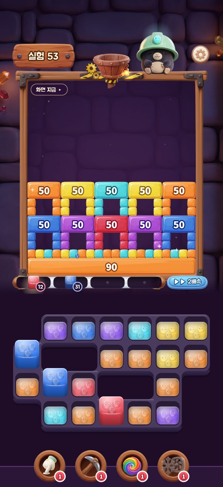
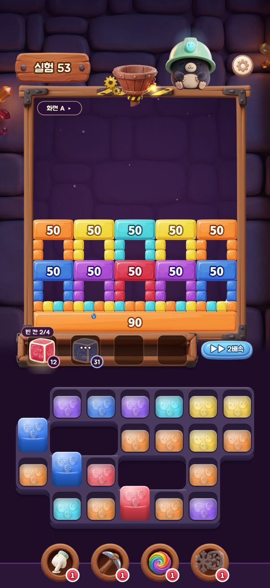
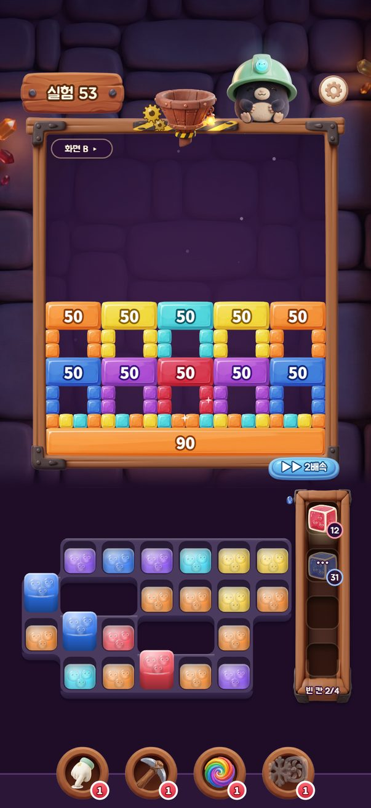
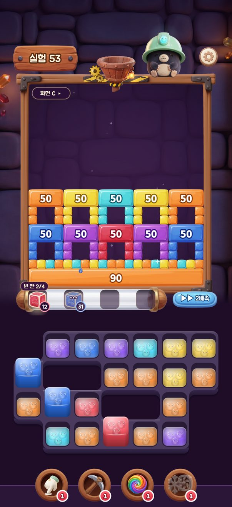

지금
v17.8
- 관 높이 30, 상자 26px라 판 상자보다 훨씬 작아요
- 2배속 버튼과 한 줄이라 칸이 버튼처럼 묻혀요
핍의 젤리 광산 실험실 「귀환 칸」 판에서 칸을 더 잘 보이게 하는 세 가지 배치예요. 모두 실제 게임 그림(상자판 나무 받침, 게이지 유리관, 판과 같은 상자)으로 그렸고, 지금 폰 링크에서 직접 바꿔 볼 수 있어요.
왜 A인가: 챔버와 상자판 사이에 칸만 있는 줄이 따로 생겨서, 픽셀 플로우처럼 '빈 칸이 몇 개 남았나'가 한눈에 보여요. 판 폭은 그대로이고, 돌아오는 젤리도 챔버 바로 아래로 짧게 날아와요. 칸에 앉은 상자가 판의 상자와 같은 그림이라 '아까 쏜 그 상자가 돌아왔다'로 읽혀요.
보통 = 빨강 상자 다시 쏠 수 있음(발밑 빛) · 파랑 상자는 젤리가 아직 돌아오는 중(반투명, 「…」).




| 기준 | 지금 | A 나무 선반 | B 세로 기둥 | C 큰 유리관 |
|---|---|---|---|---|
| 빈 칸이 한눈에 보이나 | 약함 | 가장 잘 보임 | 잘 보임 | 보통 |
| 칸 상자 크기(논리 px) | 26 | 약 47 | 약 38 | 약 36 |
| 상자판 크기 | 그대로 | 세로 26 줄어듦 | 가로 74 줄어듦 | 세로 16 줄어듦 |
| 젤리가 돌아오는 거리 | 짧음 | 짧음 | 긺(판 위 가로지름) | 짧음 |
| 2배속 버튼 | 칸 오른쪽 | 선반 오른쪽 | 게이지 줄 오른쪽 | 관 오른쪽 |
| 칸 누르는 높이 | 46 | 62 | 약 54 | 52 |
세 시안 모두 다시 쏠 수 있는 상자는 판의 꺼낼 수 있는 상자처럼 발밑 빛과 폴짝 움직임이 있고, 빈 칸이 1개 이하가 되면 칸 둘레가 붉게 깜빡여요. 폰 402px, 360px 폭을 크롬과 아이폰 엔진(WebKit)으로 찍어 겹침이나 오류가 없는 것을 확인했어요. 실기기 아이폰은 아직 안 봤어요.